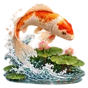
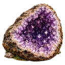
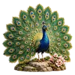
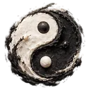
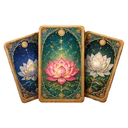

Autoestima y confianza: lo que cambia MeditaDream
La autoestima no se decreta: se construye paso a paso. Antes de un examen o de una entrevista, «Recuperar la confianza antes de una prueba» separa en cuatro minutos lo que depende de ti de lo que no. Y cuando te falta impulso, «Cuando te falta motivación» te ayuda a elegir un primer paso concreto.
El amor propio empieza por cómo te hablas. «Desarrollar el amor propio» refuerza la amabilidad contigo, «Liberarse de la comparación» toma distancia de las comparaciones y «El Miedo al Fracaso» distingue un error de tu valor personal. Para mirar más lejos, «Tu yo del futuro» une tus aspiraciones con una decisión concreta.
La confianza en uno mismo crece con la constancia. Tu dragón compañero y su isla evolucionan con tu práctica, y tu Pasaporte Zen marca cada etapa con sellos y puntos, sin competir con nadie. Una alarma te recuerda tu sesión y tus diarios guardan las pequeñas victorias que solemos olvidar. Para recargarte antes de un reto, entra en «El Corazón de la Tierra».
Tu programa
Confianza en uno mismo: 30 días de meditación diaria
Treinta días de meditación diaria para cultivar la confianza en uno mismo con pequeños pasos. Empiezas con pausas de tres o cuatro minutos, aflojas el miedo al juicio y al fracaso, y terminas imaginando tu crecimiento con realismo. Es para quien duda de sí o se compara a menudo. Bastan de 3 a 20 minutos al día, y tu dragón crece contigo.
- 30 días
- 3 a 20 min al día
- 4 etapas
- 8 sesiones
Días 1 a 7
Dar un primer paso cada día
Esta semana trabajas con pasos pequeños. «Cuando te falta motivación» deja de lado el proyecto entero y busca solo el primer paso posible. «Recuperar la confianza antes de una prueba» te hace recordar algo que ya lograste. Escúchalas cuando las necesites, y al menos una vez al día.
- Cuando te falta motivación3 min · principiante

Recuperar la confianza antes de una prueba4 min · principiante
- Alarma y recordatorios
Tu hábitoCada mañana, al sonar tu recordatorio, escucha una pausa y escribe en una frase el primer paso del día.
Señal de progresoCada día das un paso pequeño que habías decidido, aunque no tengas ganas.
Días 8 a 15
Aflojar el miedo al juicio y al fracaso
Ahora miras dos miedos que frenan la confianza. «El Miedo al Juicio» te ayuda a soltar la impresión de que todos te miran. «El Miedo al Fracaso» distingue entre fallar y ser un fracaso. Son sesiones cortas, de siete y diez minutos. Alterna las dos y repite la que más te cueste.
Tu hábitoCada noche, anota en la sección Micro-victorias de tu diario de gratitud un pequeño logro del día.
Señal de progresoTe equivocas sin juzgarte tanto, y la mirada de los demás pesa menos en tus decisiones.
Días 16 a 23
Cultivar el amor propio y la autoestima
Esta etapa cuida la base: la manera en que te miras. «Desarrollar el amor propio» te invita a reconocer una cualidad real, como tu perseverancia. «Liberarse de la comparación» mira la comparación tal como aparece hoy, sin pelear con ella. El amor propio y la autoestima se refuerzan el uno al otro.
- Desarrollar el amor propio15 min · intermedio

Liberarse de la comparación13 min · intermedio
Tu hábitoPractica cada día a la misma hora y mira cómo crece tu dragón: su humor sigue tu constancia, no tu rendimiento.
Señal de progresoPuedes nombrar tres cualidades tuyas sin dudar, y te comparas menos a menudo con los demás.
Días 24 a 30
Imaginar a quien estás llegando a ser
La última semana mira hacia delante, con los pies en el suelo. «Visualizar tu crecimiento» recorre una vía férrea con tres estaciones, cada una seis meses más allá, sin una versión idealizada de ti. «Los talentos olvidados», una sesión avanzada, te pone en la piel de un artesano de otro tiempo para traer una cualidad a tu vida de hoy.
- Pasaporte Zen y progreso
Tu hábitoElige un día para cada sesión y, al terminar, escribe una decisión concreta para la semana que viene. Los otros días, haz una pausa corta.
Señal de progresoTu Pasaporte Zen marca tus etapas, y tus notas guardan pruebas reales de lo que has avanzado en un mes.
Vuelve a la pausa de cuatro minutos antes de cada reto y vuelve a «Desarrollar el amor propio» una vez por semana. Cuando quieras ir más lejos, prueba «Tu yo del futuro».
Autoestima y confianza: las sesiones de la app
 4 Minutos4 sesiones para este objetivo · Ver la categoría →
4 Minutos4 sesiones para este objetivo · Ver la categoría →- Recuperar la confianza antes de una prueba4 min · principianteSepara lo que depende de ti de lo que escapa a tu control.
- Cuando te falta motivación3 min · principianteElige un primer paso concreto.
- Cuando tienes ganas de abandonarlo todo3 min · principianteDistingue el agotamiento del momento de una decisión.

Cuando te sientes observado o juzgado4 min · principianteCuestiona lo que supones sobre los demás.

 Sombra & Bienestar4 sesiones para este objetivo · Ver la categoría →
Sombra & Bienestar4 sesiones para este objetivo · Ver la categoría →- El Miedo al Fracaso10 min · intermedioDistingue un error de tu valor personal.
- El Miedo al Juicio7 min · intermedioExplora el temor a la mirada de los demás.
- Perdonarte a Ti Mismo17 min · intermedioInvita a hacer sitio al aprendizaje después de un error.

Trabajo con la Sombra17 min · intermedioExamina reacciones y mecanismos interiores.


Autoestima y confianza: las funciones que te ayudan

Oráculo emocionalDescribir tu estado del momento; el Oráculo te propone tres meditaciones adaptadas a lo que sientes.
Saber más →- Diarios personales
Anotar sueños, gratitud, emociones, señales y experiencias espirituales en diarios organizados.
Saber más → - Historial y reflexiones
Volver a las sesiones que has practicado y anotar tus impresiones en varias secciones de reflexión.
- Dragón compañero y su isla
Ver crecer al dragón y su isla según la regularidad de tu práctica, sin competir con nadie.
Saber más → - Pasaporte Zen y progreso
Seguir insignias, sellos, puntos y etapas de tu práctica, sin ninguna compra.
- Alarma y recordatorios
Programar un recordatorio diario, o solo algunos días, para crear un hábito regular.
- Creador de meditaciones
Escribir una sesión a tu medida; el teléfono puede leerla en voz alta, incluso sin conexión.
Saber más →
Autoestima y confianza: los mundos inmersivos
 El Corazón de la Tierra
El Corazón de la Tierra El Templo Antiguo
El Templo AntiguoAutoestima y confianza: cómo usar la app en 4 pasos
Antes de un momento que te intimida, escucha «Recuperar la confianza antes de una prueba» (4 min). Te centras en lo que depende de ti y sueltas el resto.
Programa un recordatorio tres veces por semana y escucha «Desarrollar el amor propio» (15 min). La amabilidad contigo se entrena con la repetición.
Cuando la mirada de los demás te pese, escucha «El Miedo al Juicio» (7 min) o «Cuando te sientes observado o juzgado». Separa lo que ves de lo que supones.
Cada noche, anota en tu diario de gratitud algo que hiciste bien. Al releerlo, tendrás pruebas reales de tus avances, y tu dragón seguirá creciendo contigo.
Preguntas frecuentes
¿Cómo usar MeditaDream para ganar confianza en uno mismo?
Combina pausas cortas y práctica regular. Antes de un examen o de una cita importante, «Recuperar la confianza antes de una prueba»; cuando dudas de ti, «El Miedo al Fracaso»; y para el fondo, «Desarrollar el amor propio» varias veces por semana. Anota cada pequeño logro en tus diarios: la confianza se apoya en hechos, no en frases bonitas.
¿Qué diferencia hay entre autoestima y amor propio?
La autoestima es el valor que te das; el amor propio, la manera en que te tratas, sobre todo cuando fallas. Los dos se refuerzan. Por eso MeditaDream propone sesiones para ambos: «Perdonarte a Ti Mismo» para tratarte mejor tras un error y «Visualizar tu crecimiento» para imaginar tu progreso con realismo.
¿Qué hacer cuando tengo ganas de abandonarlo todo?
Primero, no decidir en caliente. «Cuando tienes ganas de abandonarlo todo» (3 min) te ayuda a distinguir el agotamiento del momento de una decisión de fondo. Después, «Cuando te falta motivación» busca contigo un primer gesto posible. Si ese cansancio dura semanas, habla con alguien de confianza.
Para profundizar
Artículos del blog sobre este tema
 Publicado el 31 de octubre de 2026¿Cuál es la mejor hora para meditar, mañana o noche?¿Cuál es la mejor hora para meditar? La mañana y la noche no dan la misma sesión. Objetivo, cronotipo y constancia: así eliges la hora que vas a mantener.Leer el artículo →
Publicado el 31 de octubre de 2026¿Cuál es la mejor hora para meditar, mañana o noche?¿Cuál es la mejor hora para meditar? La mañana y la noche no dan la misma sesión. Objetivo, cronotipo y constancia: así eliges la hora que vas a mantener.Leer el artículo → Publicado el 12 de octubre de 2026Meditación de la mañana: empieza bien el díaPor qué la meditación de la mañana cambia el día, un ritual de diez minutos (respiración abdominal, atención, intención) y las tres trampas a evitar.Leer el artículo →
Publicado el 12 de octubre de 2026Meditación de la mañana: empieza bien el díaPor qué la meditación de la mañana cambia el día, un ritual de diez minutos (respiración abdominal, atención, intención) y las tres trampas a evitar.Leer el artículo → Publicado el 5 de octubre de 2026Meditación de 5 minutos: corta, pero realTres formatos de meditación de 5 minutos que funcionan: respiración coherente, escaneo exprés y la técnica 5-4-3-2-1. Descubre dónde colocarlos en tu día.Leer el artículo →
Publicado el 5 de octubre de 2026Meditación de 5 minutos: corta, pero realTres formatos de meditación de 5 minutos que funcionan: respiración coherente, escaneo exprés y la técnica 5-4-3-2-1. Descubre dónde colocarlos en tu día.Leer el artículo → Publicado el 3 de octubre de 2026Ejercicios de respiración para la ansiedad: 4 técnicasEjercicios de respiración para la ansiedad: suspiro fisiológico, 4-7-8, respiración cuadrada y coherencia cardíaca. Cómo calmar la ansiedad en cada caso.Leer el artículo →
Publicado el 3 de octubre de 2026Ejercicios de respiración para la ansiedad: 4 técnicasEjercicios de respiración para la ansiedad: suspiro fisiológico, 4-7-8, respiración cuadrada y coherencia cardíaca. Cómo calmar la ansiedad en cada caso.Leer el artículo →
Practica gratis
Todas estas sesiones están en la app MeditaDream: gratis, sin suscripción, sin anuncios ni cuenta, y funciona sin conexión.